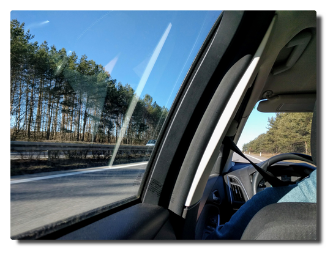
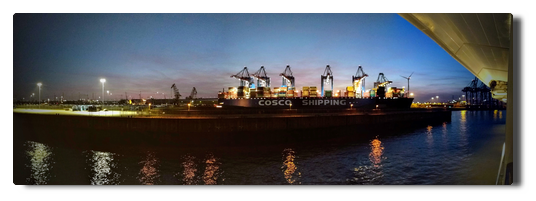

Love Boat - The Real Story
Prologue
The long planned family vacation to the Northern Lighs is close. It was distinct from the beginning that it will be a cruise. Everyone who would get to know of these plans would then immediately ask the one word question "Hurtigrouten?". The one word answer to it is "No.", the more elaborate is "No, we decided to go with AIDA primarily because of the easy arrival within Germany. Yes, I do believe that we will be spared the loud holiday club and party atmosphere like on Mallorca on this route."
The journey is called "Winter in the high North" and part of the travel operator's catalogue since 2017. You can read two travel reports in German here:
- Winter im hohen Norden mit AIDAcara
- Reisebericht: Nordlichter und Winter im hohen Norden mit AIDAcara
Hints
- My notes have been unexpectedly evolved into a lengthy report (>5000 words) separated in several articles. You find a one page version here.
- Initially some bullet points were written down to remember when filling out the AIDA feedback form but I left these here. I put these in a blue box.
- Personal tips and side notes are put in an orange box.
AIDA feedback
... is in this blue box.
Anke's tips
... look like this.
Day 1. Hamburg
Habemus luggage
We are four adults and one three-year old on a two-week winter vacation. To almost everybody's surprise the complete luggage is stashed silently into the car's trunk. Being either in good or just indifferent mood we are heading Hamburg. A few hours later we arrive at the shuttle service's parking lot, hand over our luggage, check in and there we are standing on the boat.
The ship seems like an ant hill - in the inside passengers are swarming looking for cabins and orientation and crew is distributing the suitcase masses and fulfilling all their other tasks. After settling and coming down in the strange surrounding our small first-time cruise travel party decides to have a coffee before departure.
|  |
|---|
| Arrival |
The beverage billing system
We had booked the alcohol-free beverage flat in advance and an additional card at the check-in. That thing should now let magically appear some hot beverages on the table.
After getting our drinks to our surprise we got a receipt to sign. We confronted the service staff member with our confusion but that was not very helpful because his English skills were close to non-existent. That is going to be some fun...
Finally I was able to retreive the relevant information from the slightly overstrained and a bit scared very young staff member. All drinks are called to account at the normal price either to your cabin account using the bord card or to the flatrate account using your flatrate card. In every case you have to verify the recept with your cabin number and sign. The receipts are collected, scanned and available for inspection upon request (to find out abuse or wrong billings). But nobody tells you that.
AIDA feedback
Even though the stated language on board is German and part of the staff are native speakers (reception, trip counter, guides/scouts, restaurant bosses) you are probably better off speaking English in that international staff. Regarding the target group of travelers especially on these winter routes this should be better communicated. Often middle-aged or elderly people do not speak any English.
Cast off!
Six o'clock sharp we are standing on deck 6 to watch the ship slowly depart from the pier and the Hamburg harbour. There is dinner and the welcome show at the theatre waiting.
Sometime around 10 PM, we are heading Danmark, it has become quiet on the ship. My day, the whole week were long and busy and eventful so I decide to calm down in the hamster wheel at the finess studio on deck 9. Best sleep tonight.
|  |
|---|
| Sailing away from vespertine Hamburg harbour |
Comments
Comments powered by Disqus